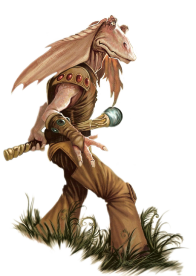

Gungan

Tratti dei Gungan
| Aumento dei punteggi caratteristica | Il punteggio di Destrezza aumenta di 2 e la Forza aumenta di 1 |
| Eta' | I gungan raggiungono la maturita' intorno ai 13 anni e vivono fino a circa 70 anni |
| Allineamento | Tendente al lato chiaro della forza |
| Taglia | Media |
| Velocita' | 9m |
| Anfibio | Puoi respirare sott'acqua |
| Scurovisione | Vedi 18m attraverso luce fioca come se fosse luce intensa e nell'oscurita' come se fosse luce fioca. Nell'oscurita' non vedi i colori, solo gradazioni di grigio. |
| Flessibile | Ottieni vantaggio nelle prove di Destrezza (Acrobazia) basate sulla flessibilita' |
| Sensibilita' al Caldo | Subisci svantaggio nei tiri salvezza su Costituzione contro l'esaurimento causato dal caldo intenso. |
| Competenza Marziale | Sei competente nell'utilizzo di armature leggere e medie e nell'utilizzo delle armi: tecno-bastone e vibro-lancia |
| Gambe Forti | Quando effettui un salto orizzontale, percorri un numero di metri pari al tuo punteggio di Forza diviso 4 (arrotondato per eccesso al piu' vicino multiplo di 1.5). Quando effettui un salto in verticale il numero di metri del tuo balzo e' 3 + due volte il modificatore di Forza |
| Nuotare | Ottieni velocita' di nuotare 9m |
| Linguaggi | Sai parlare, leggere e scrivere: Galattico Base e Gungan. Quando parli il Galattico Base trovi difficolta' nel pronunciare alcune parole o coniugare alcuni verbi. |